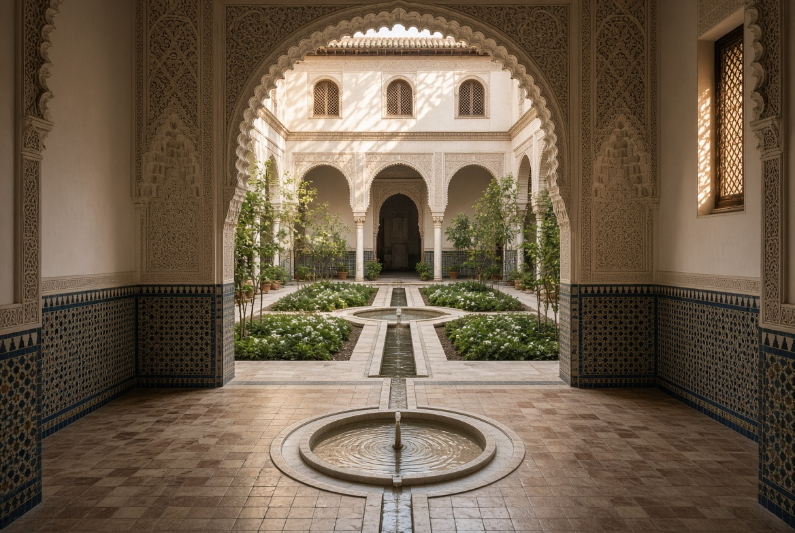
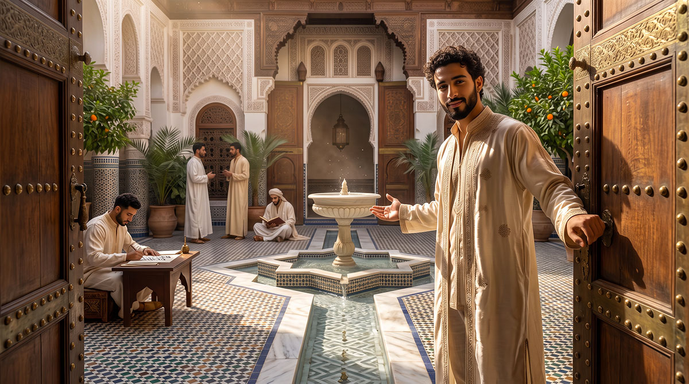
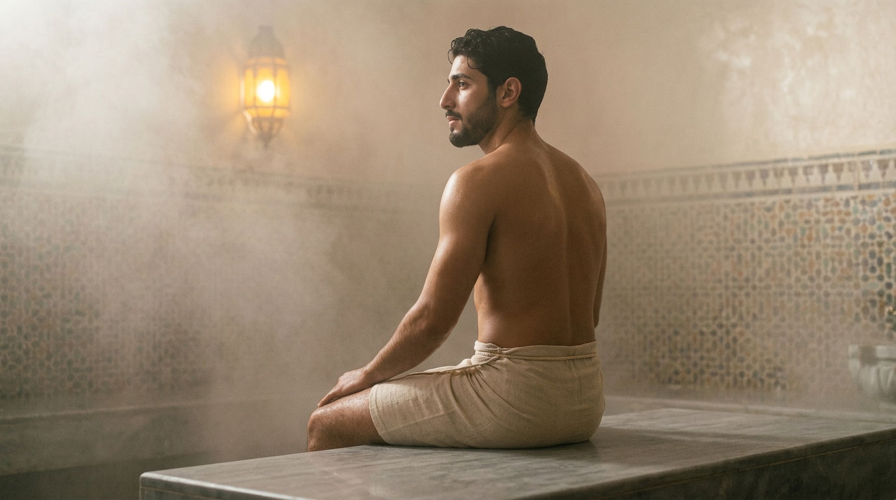

Architecture
The riad as a climatic, social and spiritual device. Patio, rooms, workshop, hammam, garden, water and air — an inhabited house, not a décor.

Even before the courtyard, there was the oasis. From the 4th millennium BCE, in the Mediterranean deserts, the wāḥa (واحة) is not a gift of chance: it is born of the decision of a human group to stay and make the rare water bear fruit — underground channels, trees planted in layers to create a microclimate. The principle that will later govern every courtyard of the Riad is already there: water organised, never wasted.
Long before Islam, the Mediterranean had already understood this principle. In ancient Greece, at Olynthos, houses already opened onto an inner courtyard — the aulē — oriented to receive the low winter sun and to be shaded in summer. It was not a luxury: it was climatic intelligence within everyone’s reach.
Rome inherits it in turn: the Roman domus is organised around the atrium, an open-air courtyard that collects rainwater — the same principle that, centuries later, will become the Andalusian, then Moroccan, patio.
The Arabo-Andalusian world inherits it and refines it, with two distinct devices for water: the salsabīl, that thin blade of water that flows over a sloping stone to maximise evaporation (already present in the Riad’s patio), and the fisqiya, the basin flush with the ground found at the Patio de los Leones and the Patio de la Acequia of the Alhambra — two ways of making water an air-conditioner, not a mere ornament.
Materials


Spaces

Threshold & rooms
Driba, parlours, dormitory — what the house shows and what it keeps.

Patio
Inner courtyard, fountain, reflection of the sky — the silent heart of the house.

Garden
Inner courtyard, shade, water, silence.

Hammam
Purification, rest, Andalusian tradition — the ancient rhythm of the bath.

Natural coolness
Passive devices, ventilation, shade.

Water
Fountains, basins, circulation.
The terms on this page are gathered in the glossary of the house.